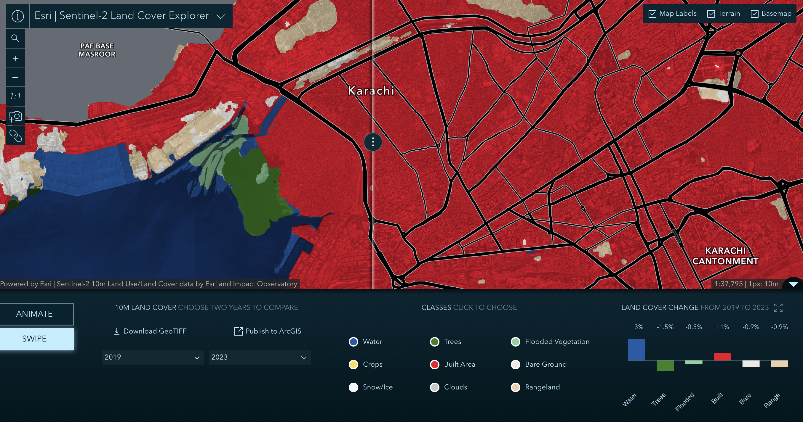

Week 0 · October 2026
Historic Land Cover at Lyari Town
The question
To what extent was the Lyari River built up in the 1980s and what distribution patterns has this area followed in the change of the amount of settlements changed over time?
The data
Sentinel-2 10m Land Use/Land Cover Time Series, Esri and Impact Observatory, 10m, 2019-2023. Licensed under the Esri Master License Agreement; the source LULC data is CC BY 4.0.
The method
The extent, scale, and rendering stayed constant at 1:1, scale 1px=1m, and rendering showing all layers. Viewers can recreate at this link: ESRI Land Cover Explorer.

This is the change in land cover at Lyari Town from 2017-2023, at a 1px=10m, 1:37,795 size, sourced from the ESRI Land Cover Explorer. ESRI Land Cover ExplorerWhat I found
One change you can see from 2019-2023 is the amount of built land on top of the Lyari river. In 2019 the river is extremely built up, with built area red completely covering the east and west sides of the northern-central bridge as well as significant area of the river bank flowing towards the ocean after that bridge. In 2023 the built area over the bridge is significantly less, and built area on the river bank was significantly curbed. I suspect this building was informal settlements in the form of slums being built on the dried up river bed during months with low rain. These settlements were most likely extremely effected by flooding during the rainy season, and were either abandoned due to this, or forcibly removed by city officials.
What this does not show
I am using the built area class in the ESRI Land Cover Explorer to stand for informal settlement slums built within the banks of the Lyari River, which block the flow of water, but this might fail because of green area classification by the explorer, meaning built area within the river is actually green space, or because built areas are actually settlements, but they were built sustainably as to not block river flow.
AI use: AI assistance was used to insert links in HTML and find license and data info using ChatGPT.